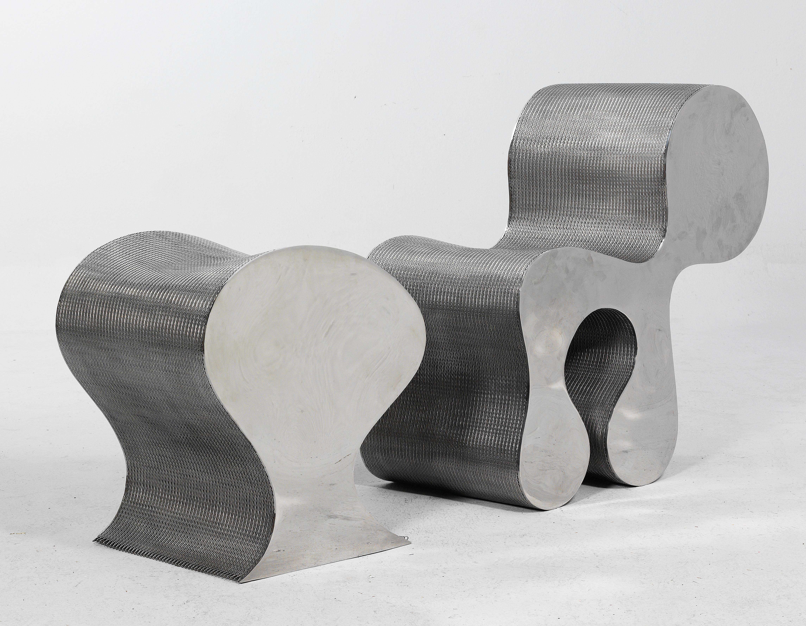
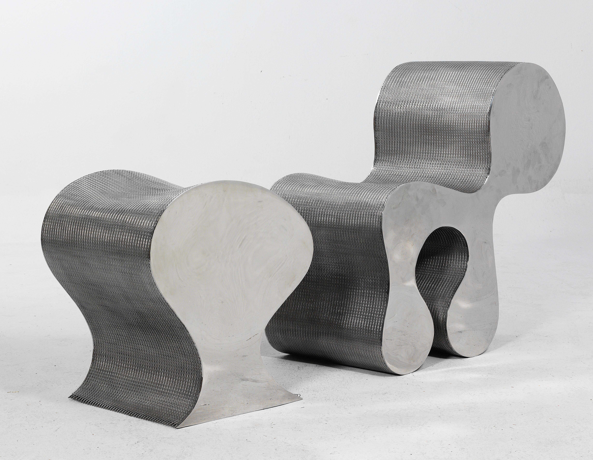

Ron Arad
Description :Cet ensemble de sièges sculpturaux s'inscrit dans la mouvance du design industriel brutaliste et expérimental de la fin du XXe siècle. Il est conçu pour rompre avec le confort conventionnel du rembourrage traditionnel, explorant plutôt la tension entre la rigueur froide du métal et des courbes étonnamment organiques et anthropomorphiques. L'esthétique joue sur un contraste saisissant entre la solidité monolithique des flancs et la transparence vibrante de l'assise, évoquant une architecture miniature ou une pièce de carrosserie futuriste détournée de sa fonction première.
Structure :La construction repose sur l'assemblage audacieux de deux matériaux métalliques distincts. Les flancs sont constitués de plaques d'acier (ou d'aluminium) découpées aux formes sinueuses et pleines, assurant la stabilité visuelle et structurelle. L'assise et le dossier sont formés par une nappe de maille métallique industrielle ou de grillage ondulé, tendue entre les deux parois, créant une surface texturée, semi-transparente et faussement souple qui épouse la courbe du corps tout en laissant filtrer la lumière.
Dimensions :H. (Hauteur totale) : 75 cm, L. (Largeur) : 60 cm, P. (Profondeur) : 80 cm.